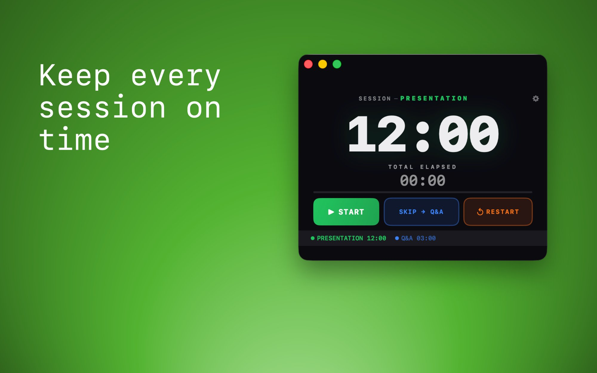
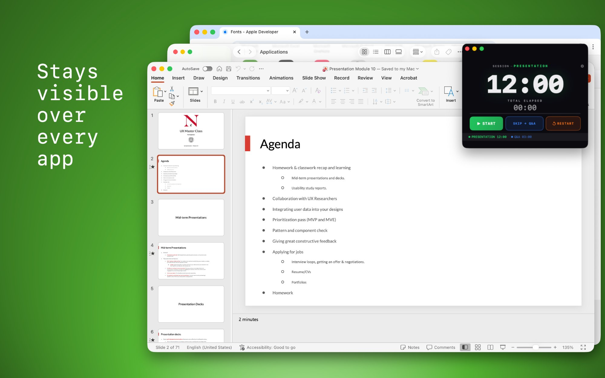
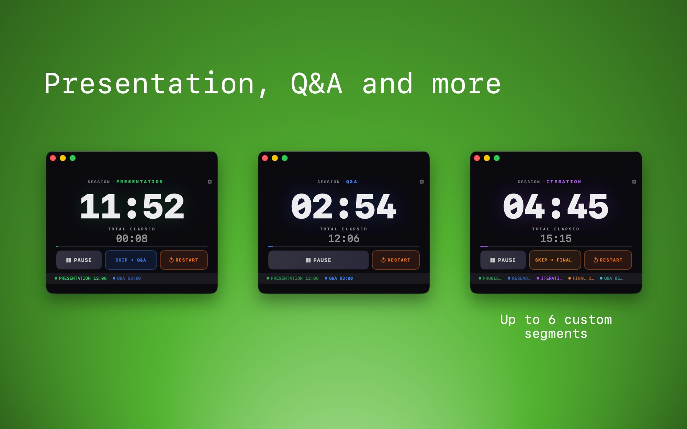
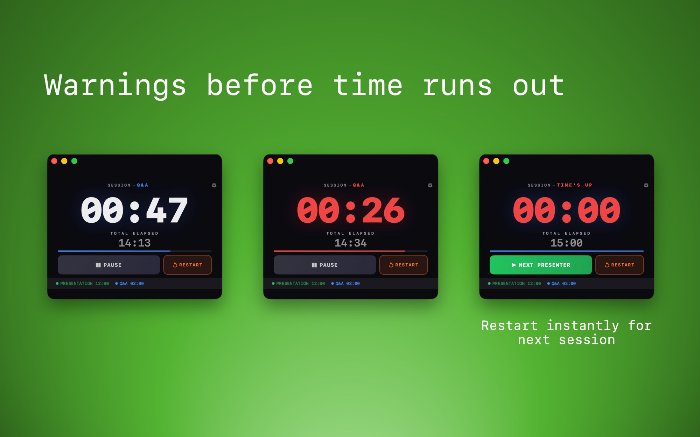
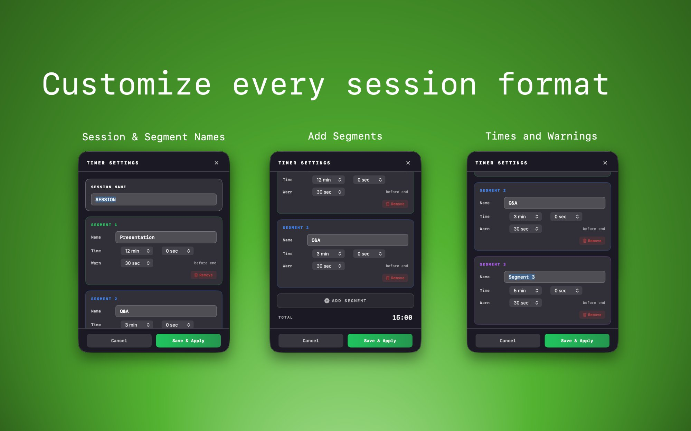

Keep every presentation on time.
Session Flow Timer is a focused timer for Mac that stays visible above your windows and across Spaces, so you can manage presentations, critiques, classes, and Q&A without losing track of time.

Designed for real presentation flow
Session Flow Timer keeps timing simple: create named segments, monitor elapsed time, jump to the next section, and see clear visual warnings when time is nearly up.
Stays on top
Keep the timer visible above slides, browser windows, Zoom, and other apps so you always know where you are.
Multi-segment sessions
Build a session with separate segments like Presentation, Demo, Critique, or Q&A.
Clear warning states
Get strong visual cues as the countdown approaches zero, making it easier to wrap up gracefully.
How it looks in use
Always-on-top visibility, multi-segment sessions, clear warning states, and fully customizable settings.

Always visible
Keep the timer above your slides, browser, Zoom, and other apps while you teach, present, or facilitate.

Multi-segment sessions
Build sessions with up to 6 custom segments like Presentation, Q&A, Critique, or Iteration — each with its own timer.

Clear warning states
Strong color changes make it obvious when time is running low, and a "Next Presenter" button lets you restart instantly.

Fully customizable
Name your sessions and segments, set durations, and configure warning timing — all from a clean settings panel.
Great for
- University teaching and studio critiques
- UX portfolio reviews and design interviews
- Conference sessions and speaker timing
- Workshops, demos, and team presentations
Why it helps
- Maintains fairness across presenters
- Reduces mental overhead while facilitating
- Keeps Q&A and transition time visible
- Prevents timing drift in longer sessions
Support
Need help with Session Flow Timer? We’re happy to help.
Email support: [email protected]
Best way to get help:
- Describe what happened
- Include your macOS version
- Include the Session Timer version if available
- Add screenshots if the issue is visual
Typical support topics:
- Staying on top of other windows or across Spaces
- Segment setup and warning timing
- Start, pause, skip, and restart behavior
- App behavior after install or update
Privacy Policy
Session Flow Timer does not require an account and does not collect personal data for tracking or advertising.
Session Flow Timer is designed to run locally on your Mac. We do not sell personal data, and we do not use third-party advertising SDKs inside the app.
Information we do not collect:
- No account registration information
- No analytics tied to your identity
- No advertising profile data
- No presentation content from your files or windows
Local app data:
- Your timer configuration may be stored locally on your device
- This may include segment names, durations, and warning settings
- This information stays on your device unless you choose to share it
Support communication:
- If you contact us by email, we use the information you send only to respond to your request
- We do not use support messages for advertising
If you have questions about privacy, contact us at [email protected].